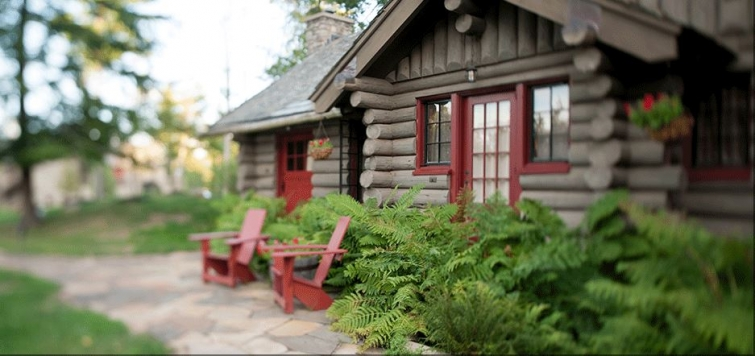

.png)
.PNG)
.PNG)
.PNG)
.PNG)
.PNG)
.JPG)
.JPG)
.PNG)
.PNG)


If you are rich and/or famous, perhaps you have stayed there. If you are like me (neither rich nor famous), you have only enjoyed this over-the-top resort through photographs and dreams of being there. Either way, The Point is a spectacular place to see. I first learned about it many many years ago in an article in Victoria magazine.
It was built in the early 1930’s as one of the Great Camps on Upper Saranac Lake in the Adirondacks region of New York by William Avery Rockefeller. Yes, it was a Rockefeller’s private residence. Designed by architect Willliam G. Distin and completed in 1933, it was originally named Wonundra – an Australian Aborigine word meaning “Big Rock.”
source
If rustic elegance was a word in the dictionary, The Point would be the picture beside its definition. It is the epitome of rustic and top notch elegance. Just take a look at a few of the rooms. Iroquois, the room in the photograph below, was originally daughter Elsie Rockefeller’s bedroom.

Mohawk was the Rockefeller’s master bedroom.
Here is Mohawk’s updated bathroom.
There are several buildings spread across the 75 acres (with only 11 rooms available for accommodations.)
One of the most requested rooms sits atop their boathouse.
It is quite a room, and years ago, it was my favorite.
I have read that the service there is always flawless – as if they can predict your every want and need. 🙂 There are many outdoor activities from which you can choose – no matter what the season. The food is superb with communal seating around 2 large tables – black tie on Wednesday and Saturday nights. There are even sunset cruises on the lake in one of their two boats.
All of the furniture is adirondack style mixed with old photographs and oil paintings, and there is a giftshop on site.
All activities and all meals are included in your room rate, but I doubt we will ever be able to enjoy it. One evening’s accommodations are sadly more than our monthly mortgage payment. 🙁 You are most definitely living like a Rockefeller at The Point. (I believe it is rated as one of the top 10 most expensive hotel rooms in the United States.)
Interestingly, last year, several articles were published stating that the owners had defaulted on their loan, and The Point was in foreclosure. I am not sure of all the details, but it has something to do with a loan and Lehman Brothers. I am also not sure financially what has become of it, but the business continues to be run by the same general manager with the same set of high standards. I checked the recent reviews on Trip Advisor, and they all continue to be 5 star reviews. So if you have a million or two or three waiting to be invested, perhaps you’d like to own The Point (just keep the same general manager running things for you.)
Also, they have an opening for the evening dining room supervisor if you are interested. You can apply here.
(Just thought you might want to know about that. 🙂 )
And finally, I am leaving you with a short video so that you can take a virtual vacation there this weekend. Fingers crossed it will work for you. ( I am having trouble getting it to play again on my computer, but it is working on my husband’s smartphone.) Click here or here, and hopefully one of the links will work.

Hope you have a great weekend planned!


.PNG)
“Rustic Elegance” Oh, you are so right! Love the wood boats. Drool fest. We have been spending the last couple of weekends up in lower Wisconsin at a lake and saw quite a few older Chris Craft boats. Nothing like the sound of the inboard motors… Your right, I am not rich or famous, but there is something about the serenity of a lake….sigh. So relaxing and calming. <3
I just watched the video and realized that it is time to start saving my pennies! This would be our dream vacation – on the water and near the woods~
————————————————————————
It would certainly be a dream of a trip. They have families that reserve the entire place for weddings there. Can you imagine how beautiful that would be??!
Kelly
Kelly,
Well, I’m not sure I could justify the dollar amount of a stay even if I could afford it! But it sure was fun touring via Kelly’s Travelogue. 🙂 I like Elsie Rockefeller’s room better than the main master bedroom.
What a magical setting. The gates, photographed during the winter months were so inviting. We’ll, I should say you, will have to find us something equally lovely for a more affordable rate. Yes, by a lake, yes, somewhere where it might snow during the winter. Ha, ha, ha.
xo
Karen
————————————————————————
Okay, Karen, your travel agent here will look for you a similar place with less expensive rates. 🙂 (and of course one with snow!) I liked Elsie’s room better than the master bedroom too, and I would love to know how they looked when the house was decorated for the Rockefellers way back originally.
Hope you are enjoying the fall weather now.
Kelly
Katrina and I were fortunate enough to stay there last fall. Just kidding….but we did go to a fabulous baby shower today and your ears might have been burning because we were talking about you…just like we were talking about any of our other good friends.
———————————————————————-
OMG, you had me at your first sentence! (So gullible here!) I hope you were only saying fabulous things about me…and not comments about my chicken self not seeing Gone Girl, right? 🙂
Kelly
My perfect heaven! But NO WAY I could ever afford those rates!!! :-/ I struggle BTW beach life or lake life, but lean towards lake for the cooler temps and abundant wildlife. Sadly, I don’t have either, but it’s nice to dream! Thanks for another one!
——————————————————————-
Marianne, you tastes sound exactly like mine – often dependent upon the season. And sadly we have neither of the second homes either. Perhaps one day…
Kelly
Love the phrase “rustic elegance”!!! That’s what I’m trying to do with my own home. No log home yet ( that’s my dream home on a lake), but we do live in a rural setting so I’ve been gravitating toward beefier masculine furnishing with a bit of feminine here and there.
——————————————————————-
Sounds like a great decorating look. I often wonder how men feel about living in rooms today that seem to have a very decidedly “feminine” look. (That would obviously NOT be the case at The Pointe! 🙂 )
Kelly
Transported to another time, another place……
I can smell it, I can feel it.
Thank you for your beautiful and informative post!
———————————————————————
I think part of the beauty of The Pointe is that it does make you feel like you have traveled back in time to the era of the Great Camps. I am glad you enjoyed the “visit” there Therese. 🙂
Kelly
goodness, the cost of a night’s stay more than a monthly mortgage payment? as my son would say, that’s “stupid money”! we see a lot of “stupid money” as we cruise around on Lake Martin during the summer. i’m grateful to come back to my sister’s modest cabin but the views are priceless.
thank you for sharing this beautiful place….at least we can all dream!
——————————————————————-
Yes, I would tend to agree with your son – especially in light of all the needs in our world today. How wonderful that you can enjoy the priceless views at your sister’s cabin! And yes, we all can dream about places like The Pointe. Perhaps one day they will change their targeted audience, and we will all be fighting for reservations there at rates we can all afford.
Kelly
Kelly, how fun to see the rooms at The Point! It would be fabulous to stay there, I’m sure! I guess I can dream about it anyway. I love old rustic lodges and am always amazed by how timeless they are.
When you come to Washington, you should try to make time to visit Leavenworth, a little Bavarian town in the Cascade mountains. It’s a beautiful spot with an abundance of lovely lodging options. Just a suggestion :). Have a great weekend. Always enjoy your posts!
——————————————————————–
Thank you for the suggestion Gracia. I have not heard of Leavenworth – sounds like the Pacific NW version of Helen, Georgia – an imitation Swiss village in the north Georgia mtns. I will pass along your suggestion to our sons in Seattle, and perhaps they can visit it now.
Kelly
I love seeing examples of refined rustic because I live in a log home, and I get tired of seeing cliched cutesy kitsch. We’re not on a lake, but in the mountains of NC which are gorgeous enough. I’ve seen photos and books on the Great Camps and the Adirondack style including some of the exteriors shown here, but I hadn’t seen these gorgeous bedrooms available for booking. (Not that I could ever afford a stay there.) They’re warm, rustic, and rich, and, if you’ll excuse the term, not too campy. I can do without the deer heads and animal skin rugs, though. I did watch the video, but it had to keep buffering. These folks certainly do know how to do rustic elegance. As for Lake Saranac, I always think of my grandfather who spent time there in the early days of the twentieth century in a tubercular sanitarium. He died as a young man, but I have his scrap books of his stay there. Thanks for this lovely post – perfect for fall. We’re getting lots of color up here in the mountains now.
———————————————————————
Oh how I loooove the mountains of NC. That is one of my dream places to live. 🙂 You are so right about The Point not being too cutesy and campy. That definitely keeps it on the refined side, doesn’t it? How interesting about your grandfather, and what a great piece of memorabilia to have from him.
Thank you for reading and commenting Carolyn. Hope your week is going well.
Kelly
Oh how I am enjoying this wonderful posting tonight! I really needed to see all this rustic and glamorous lodgings. You know how I have been looking forward to my trip to the mountains? Last year at this time, I started dreaming and planning– now one week before going, our daughter fell and broke her ankle and had to have surgery to repair it. So– not this year–:( But I am thankful to be able to have her here at the lake house to take care of– it will be a two month recovery time with trips to dr and PT. We will try to make the trip next fall–I do think half of the fun is looking forward to something, don’t you?! We have had some great trips since August and now I will get into my fall decorating full force–in my spare time. Thank you Kelly for giving all the followers beautiful places to look at and dream about throught your blog!!
———————————————————————-
I am so sorry that your daughter has a broken ankle Louvina! How painful…and SO not fun. (We had that last year with our oldest son…who wears a size 13 shoe by the way!) And I am also so very sorry that you can’t take your wonderful mountain trip you had planned. I do hope you will get to go next year. At least you have been able to have some fabulous trips in the last couple of months. Hope your fall decorating is going well. 🙂
Kelly